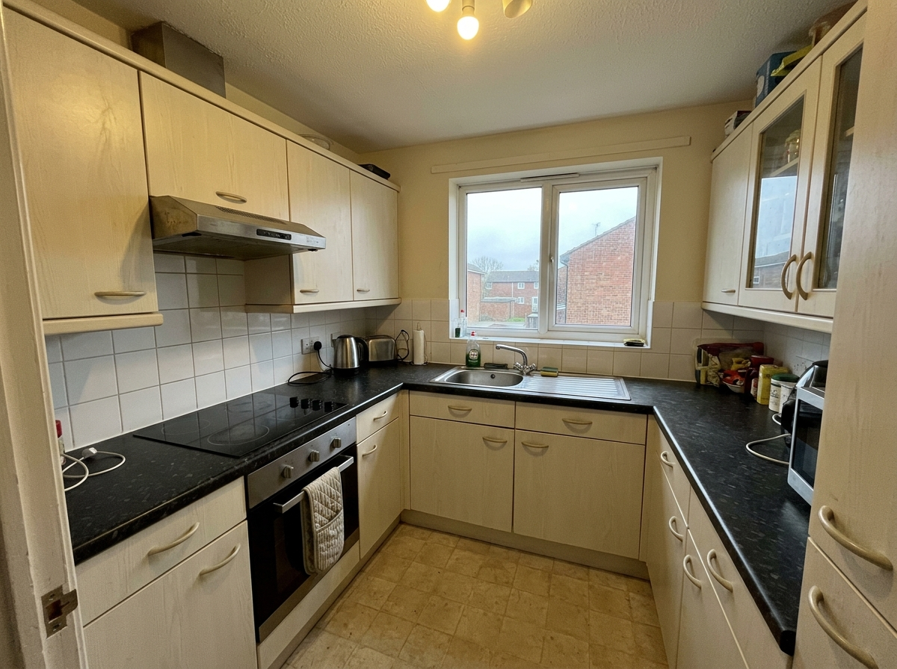

RP-001 · A-wide
Google / Nano Banana 2 Lite
Status: pass_a_accepted
Exact prompt
Create one photorealistic landscape photograph that looks like an ordinary smartphone capture of a kitchen in a modest 1990s UK flat with dated but maintained fittings. This is view A-wide: standing at the doorway; wide establishing view. Visible evidence required in this view: kitchen units, dark worktop, sink, oven, induction hob, extractor hood. Intended visible defects: none. Negative controls: wood grain is not mould; no cracked tiles. The room is mildly cluttered but clean under overcast daylight mixed with warm ceiling lights. Across views preserve: same pale units, dark worktop, appliance positions and window across all four views. Avoid: people, logos, readable text, watermark, impossible geometry, extra doors or windows. Do not add labels, captions, borders, or inspection annotations. Show only visually supportable property evidence; do not make hidden areas visible.